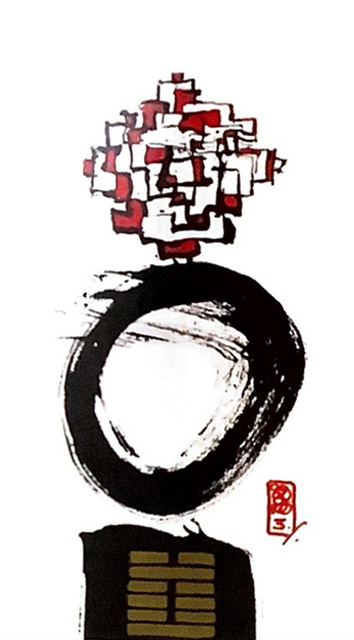

수뢰둔
4대 난괘 1
어려운 탄생. 어렵지만 결국에는 새싹을 틔운다
꽃은 피었는데 뿌리가 얼었다.활짝 필 가능성은 있지만 아직 어려운 모습을 표현.봄이 올 때까지 씨앗을 품은 채 신중하게 기다림.얼음속에 핀 꽃
어려움.두려움.고난.막히다.고민하다.혼돈.탄생의 고통.시작하는 어려움.성장통.아픈만큼 성숙해짐.냉혹한 현실.어색함.점점 강해짐.미숙함.경험부족.현재는 불투명
연애운
사랑하고 싶은 마음은 있으나 사귀어도 결합이 힘들다
사업운
어려운 시기.때가 아니다.도움 받아야 극복.준비가 더 필요하다
속마음
썸호감은 있으나 마음을 표현하지 않아 시작이 어렵다고 생각한다
1년 이상권태스러움.현실적인 여력이 되지 읺아 주춤
이별 후재회하고 싶은 마음은 있으나 여력이 되지 않아 움직이려고 하지 않는다
솔로연애운
새로운 이성 생길 확률 적다
성향
의심.두려움.냉소적.겁 많음.의기소침
건강운
심장병.신경통.히스테리